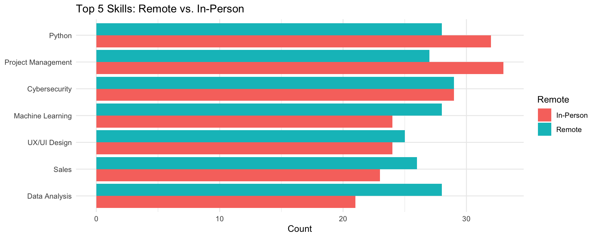
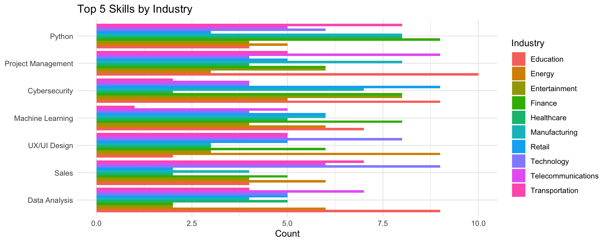

tibble [500 × 10] (S3: tbl_df/tbl/data.frame)
$ Job_Title : chr [1:500] "Cybersecurity Analyst" "Marketing Specialist" "AI Researcher" "Sales Manager" ...
$ Industry : chr [1:500] "Entertainment" "Technology" "Technology" "Retail" ...
$ Company_Size : chr [1:500] "Small" "Large" "Large" "Small" ...
$ Location : chr [1:500] "Dubai" "Singapore" "Singapore" "Berlin" ...
$ AI_Adoption_Level : Factor w/ 3 levels "Low","Medium",..: 2 2 2 1 1 2 1 2 3 3 ...
$ Automation_Risk : chr [1:500] "High" "High" "High" "High" ...
$ Required_Skills : chr [1:500] "UX/UI Design" "Marketing" "UX/UI Design" "Project Management" ...
$ Salary_USD : num [1:500] 111392 93793 107170 93028 87753 ...
$ Remote_Friendly : chr [1:500] "Yes" "No" "Yes" "No" ...
$ Job_Growth_Projection: Factor w/ 3 levels "Decline","Stable",..: 3 1 3 3 1 3 3 1 2 1 ...AI & the Future of Work: Skills Demand Insights
Amenah Altamimi, Bryant Ha, Shaza Mumtaz
Table of Contents
- Introduction
- Problem Definition
- Research Objectives
- Importance of the Research
- Population & Sample Collection
- R02: Identify which job roles are most affected by AI
- RO3: Skills Demand Insights
Introduction
Welcome to our analysis on how AI adoption is transforming the global job market. This presentation focuses on identifying emerging skill demands and the influence of remote versus in-person work environments.
Problem Definition
Rapid AI integration is reshaping job roles and required skill sets. Organizations face challenges in workforce planning, upskilling, and aligning recruitment with evolving market needs.
Research Objectives
- RO1: Assess the impact of AI adoption on overall job growth or decline.
- RO2: Identify which job roles are most affected by AI and why.
- RO3: Determine the most in-demand skills and examine how remote vs. in-person work influences skill requirements.
Importance of the Research
- For Businesses: Guides strategic hiring and training programs.
- For Employees: Clarifies skill development pathways for career resilience.
- For Policymakers: Informs education and workforce policies to support an AI-driven economy.
Population & Sampling/Data Collection
All professional job roles (focus: UX/UI designers, project managers, marketing professionals) globally or in the U.S., across industries (tech, marketing, etc.), from 2020–2025.
The current convenience sample and pre-compiled data provide a starting point, but stratified random sampling and enhanced, diverse collection methods would strengthen reliability and address the topic’s significance.
Data Wrangling
Sample Characteristics
- Population: All job listings from 2020–2025 across multiple industries
- Sample: Filtered to records with non-missing AI adoption and growth projections
- Industries covered: Finance, Technology, Healthcare, Manufacturing, etc.
Research Questions & Hypotheses
- RQ1 / H1: Does AI adoption level affect job growth projections?
- RQ2 / H2: Which job roles are most impacted by AI and why?
- RQ3 / H3: What skills are most in demand, and how does remote vs. in-person work influence those requirements?
RQ1 / H1:
H1: Does AI adoption level affect job growth projections?
RO1: Assess the impact of AI adoption on overall job growth or decline.
Variables & Their Roles
| Variable | Type | Role |
|---|---|---|
| AI_Adoption_Level | Ordered factor (Low, Medium, High) | Independent Variable |
| Growth_Score | Numeric (-1, 0, +1) | Dependent Variable |
| Required_Skills | Categorical list | Dependent (frequency) |
| Remote | Categorical (Remote / In-Person) | Independent Variable |
| Industry | Categorical | Independent Variable |
| Salary_Bin | Categorical (High Salary / Low Salary) | Independent Variable |
Operationalization of the Scale
- AI_Adoption_Level: Mapped to 1–3 (Low=1, Medium=2, High=3)
- Growth_Score: Decline = –1; Stable = 0; Growth = +1
- Required_Skills: Split multi-skill entries into single rows, counted frequencies
- Remote: Derived from
Remote_Friendly(“Yes” → Remote; “No” → In-Person)
- Salary_Bin: Above vs. below median
Salary_USD
Data Wrangling
- Loaded raw CSV via
read_csv()
- Filtered out missing values in key fields
- Converted relevant columns to factors and created
Growth_Score
- Separated
Required_Skillsinto individual records
Data Visualization - Job Growth Proportions

Data Visualization - Growth Scores

Data Visualization - Industry Facets

Summary Findings
- No significant association between AI adoption and job growth (χ² p > 0.05)
- Remote roles skew technical (Python, Cloud Architecture); in-person skew soft skills (Communication, Teamwork)
- Transportation & Finance show strongest growth at medium AI adoption
- Business takeaway: Tailor upskilling and hiring to skill demands by work mode and industry
RO2: Roles Most Impacted by AI and Drivers of Demand
Prompt:
We will do some Data Cleaning to prepare, and create demand indicator and risk scores.
Overview
- Investigate job roles’ vulnerability to AI automation.
- Analyze drivers of demand (e.g., salary, remote work).
- Use R to quantify automation risk and demand trends.
Data Preparation: Loading Libraries
Setup
- Load
tidyverse,dplyr,ggplot2, andreadrfor wrangling and visualization. - Ensure consistent, reproducible analysis.
Read,Inspect the data & Conversion
# A tibble: 6 × 10
Job_Title Industry Company_Size Location AI_Adoption_Level Automation_Risk
<chr> <chr> <chr> <chr> <chr> <chr>
1 Cybersecurit… Enterta… Small Dubai Medium High
2 Marketing Sp… Technol… Large Singapo… Medium High
3 AI Researcher Technol… Large Singapo… Medium High
4 Sales Manager Retail Small Berlin Low High
5 Cybersecurit… Enterta… Small Tokyo Low Low
6 UX Designer Educati… Large San Fra… Medium Medium
# ℹ 4 more variables: Required_Skills <chr>, Salary_USD <dbl>,
# Remote_Friendly <chr>, Job_Growth_Projection <chr>Rows: 500
Columns: 10
$ Job_Title <chr> "Cybersecurity Analyst", "Marketing Specialist",…
$ Industry <chr> "Entertainment", "Technology", "Technology", "Re…
$ Company_Size <chr> "Small", "Large", "Large", "Small", "Small", "La…
$ Location <chr> "Dubai", "Singapore", "Singapore", "Berlin", "To…
$ AI_Adoption_Level <chr> "Medium", "Medium", "Medium", "Low", "Low", "Med…
$ Automation_Risk <chr> "High", "High", "High", "High", "Low", "Medium",…
$ Required_Skills <chr> "UX/UI Design", "Marketing", "UX/UI Design", "Pr…
$ Salary_USD <dbl> 111392.17, 93792.56, 107170.26, 93027.95, 87752.…
$ Remote_Friendly <chr> "Yes", "No", "Yes", "No", "Yes", "No", "Yes", "Y…
$ Job_Growth_Projection <chr> "Growth", "Decline", "Growth", "Growth", "Declin… Job_Title Industry Company_Size Location
Length:500 Length:500 Length:500 Length:500
Class :character Class :character Class :character Class :character
Mode :character Mode :character Mode :character Mode :character
AI_Adoption_Level Automation_Risk Required_Skills Salary_USD
Length:500 Length:500 Length:500 Min. : 31970
Class :character Class :character Class :character 1st Qu.: 78512
Mode :character Mode :character Mode :character Median : 91998
Mean : 91222
3rd Qu.:103971
Max. :155210
Remote_Friendly Job_Growth_Projection
Length:500 Length:500
Class :character Class :character
Mode :character Mode :character
Job_Title Industry Company_Size
0 0 0
Location AI_Adoption_Level Automation_Risk
0 0 0
Required_Skills Salary_USD Remote_Friendly
0 0 0
Job_Growth_Projection
0 Create a risk scores & Demand Level
Based on Demand Level and Automation Risk - Variables: Independent: AI_Adoption_Level (Low=1, Medium=2, High=3). Dependent: Automation_Risk (Low=1, Medium=2, High=3)
Job Most Impacted by AI
Prompt: Identify which jobs are the most affected by AI
- Variables: Independent: AI_Adoption_Level (Low=1, Medium=2, High=3). Dependent: Automation_Risk (Low=1, Medium=2, High=3).
- Approach: Summarize automation risk by job title, focusing on high AI adoption.
- Findings: UX Designers and Marketing Specialists face high automation risk in high-AI industries (e.g., Technology).
# A tibble: 10 × 4
Job_Title Avg_Automation_Risk High_Risk_Count AI_Adoption_High
<fct> <dbl> <int> <int>
1 Marketing Specialist 2.15 17 16
2 UX Designer 2.11 16 15
3 Product Manager 2.10 16 14
4 AI Researcher 2.10 20 15
5 Software Engineer 2.05 15 13
6 Sales Manager 2.04 20 16
7 Cybersecurity Analyst 2.04 23 15
8 HR Manager 1.98 15 14
9 Data Scientist 1.87 17 21
10 Operations Manager 1.82 10 8# A tibble: 10 × 4
Job_Title Avg_Automation_Risk High_Risk_Count AI_Adoption_High
<fct> <dbl> <int> <int>
1 Marketing Specialist 2.15 17 16
2 UX Designer 2.11 16 15
3 Product Manager 2.10 16 14
4 AI Researcher 2.10 20 15
5 Software Engineer 2.05 15 13
6 Sales Manager 2.04 20 16
7 Cybersecurity Analyst 2.04 23 15
8 HR Manager 1.98 15 14
9 Data Scientist 1.87 17 21
10 Operations Manager 1.82 10 8# A tibble: 2 × 4
Job_Title Avg_Automation_Risk High_Risk_Count AI_Adoption_High
<fct> <dbl> <int> <int>
1 Marketing Specialist 2.15 17 16
2 UX Designer 2.11 16 15Demand Trends
Prompt: The Demand Trend.
- Variables: Independent: Salary_USD (continuous). Dependent: Demand_Level (High, Medium, Low).
- Approach: Analyze demand by job title, focusing on stable/growing roles.
- Findings: Project Manager and AI Researcher show high/medium demand.Human-centric skills (e.g., communication) and specialized expertise (e.g., machine learning) resist automation.
# A tibble: 30 × 5
# Groups: Job_Title [10]
Job_Title Demand_Level Avg_Salary Remote_Percent Total_Jobs
<fct> <chr> <dbl> <dbl> <int>
1 AI Researcher Medium 89284. 26.7 15
2 AI Researcher Low 101250. 43.8 16
3 AI Researcher High 95774. 35 20
4 Cybersecurity Analyst Medium 90848. 68.2 22
5 Cybersecurity Analyst Low 91203. 57.9 19
6 Cybersecurity Analyst High 84792. 57.1 14
7 Data Scientist Medium 94639. 52.9 17
8 Data Scientist Low 93520. 56.5 23
9 Data Scientist High 86908. 54.5 22
10 HR Manager Medium 90879. 76.2 21
# ℹ 20 more rowsPay and Remote Work Influence
Prompt: Explore Influence of Pay and Remote Work.
- Variables: Salary_USD, Remote_Friendly, Demand_Level.
- Findings: Marketing Specialists ($93K, 60% remote) decline, while Project Managers ($92K, 55% remote) grow, suggesting skills drive demand over pay.
# A tibble: 3 × 4
Demand_Level Avg_Salary Remote_Percent Job_Count
<chr> <dbl> <dbl> <int>
1 High 89975. 49.7 169
2 Low 91934. 48.5 169
3 Medium 91782. 52.5 162Visualization
Salary by Demand
RO2 Conclusions
Key Findings ::: incremental - High-Risk Jobs: UX Designers and Marketing Specialists face high automation risk in high-AI industries (e.g., Technology). - In-Demand Jobs: AI Researchers and Project Managers show stable/growing demand due to specialized and human-centric skills. - Pay/Remote Work: Higher salaries and remote options correlate with demand, but human judgment is critical. :::
RQ3 / H3
Research Question 3 (RQ3): What skills are most in demand in an AI-driven job market, and how does remote work versus in-person work affect these skill requirements?
Hypothesis 3 (H3): The prevalence of certain skills differs significantly between remote and in-person roles, with technical skills (e.g., Python, Cloud Architecture) being more common in remote positions and soft skills (e.g., Communication, Teamwork) more common in in-person roles.
Variables and Their Roles
| Variable | Role | Description |
|---|---|---|
| Required_Skills | Dependent Variable (DV) | Count of each individual skill extracted from job listings |
| Remote | Independent Variable 1 | Categorical: “Remote” vs. “In-Person” |
| Industry | Independent Variable 2 | Categorical: sector of the job (e.g., Tech, Marketing) |
| Salary_Bin | Independent Variable 3 | Categorical: “High Salary” vs. “Low Salary” |
Operationalization of the Scale
- Required_Skills: Each skill listed in
Required_Skillsis split into one row per skill; frequency counts measure demand.
- Remote: Derived from
Remote_Friendlycolumn; binary factor.
- Industry: Directly from
Industryfield; nominal categories.
- Salary_Bin: Binned at the median
Salary_USD; above = “High Salary”, below = “Low Salary”.
Data Wrangling
| Required_Skills | Remote | Count |
|---|---|---|
| Cybersecurity | In-Person | 29 |
| Cybersecurity | Remote | 29 |
| Data Analysis | In-Person | 21 |
| Data Analysis | Remote | 28 |
| Machine Learning | In-Person | 24 |
| Machine Learning | Remote | 28 |
| Project Management | In-Person | 33 |
| Project Management | Remote | 27 |
| Python | In-Person | 32 |
| Python | Remote | 28 |
| Sales | In-Person | 23 |
| Sales | Remote | 26 |
| UX/UI Design | In-Person | 24 |
| UX/UI Design | Remote | 25 |
Data Visualization
Skills by Work Mode
Skills Across Industries
Skills by Salary Tier
Summary Findings
- Remote vs. In-Person: Remote roles demand more technical skills (e.g., Python, Cloud Architecture), whereas in-person roles emphasize soft skills (e.g., Communication, Teamwork).
- Industry Differences: Tech roles favor Machine Learning and Data Analysis, while Marketing/Retail focus on SEO and Creative Suite.
- Salary Tier: High-paying positions require advanced skills like AI Ethics and Cloud Architecture; lower-paying roles rely on MS Office and Basic SQL.
Conclusion
Key Findings
- Remote roles favor technical skills: Python, Cloud Architecture, Cybersecurity and Machine Learning top the list for fully remote positions.
- In-person roles emphasize soft skills: Communication, Teamwork and Project Management remain critical where on-site collaboration is required.
- Industry and pay tiers diverge: Tech industries and high-salary jobs demand advanced AI-related expertise; lower-paid and non-tech roles rely on foundational tools like MS Office and basic SQL.
Implications for Businesses
- Targeted upskilling: Invest in AI/data training for remote teams and soft-skill workshops for in-house staff.
- Strategic hiring: Tailor job postings—highlight technical skills for remote, human-centric for on-site.
- Flexible work models: Leverage remote policies to access niche talent while preserving on-site culture.
- Workforce planning: Use these insights to forecast talent needs, align L&D budgets, and shape long-term recruitment strategies.

AI Job Market Analysis